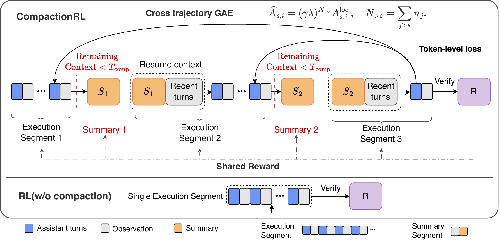
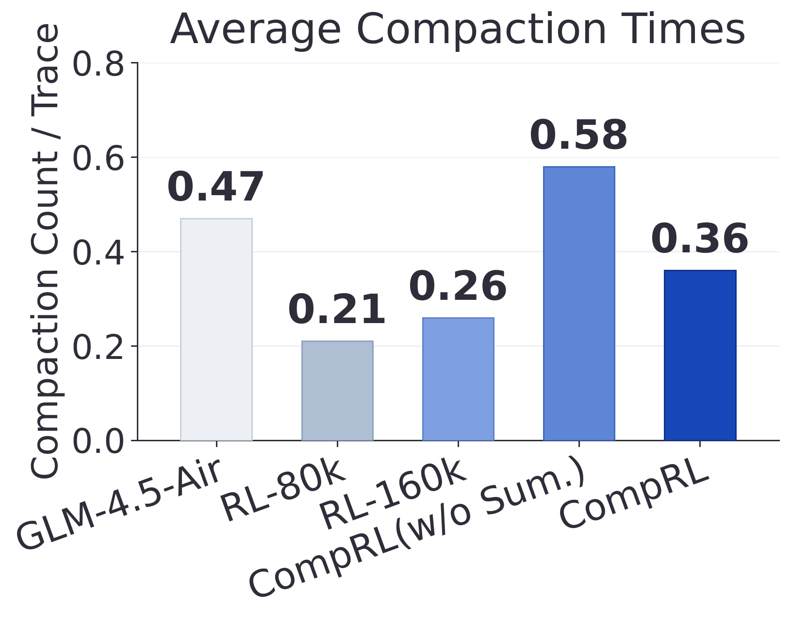
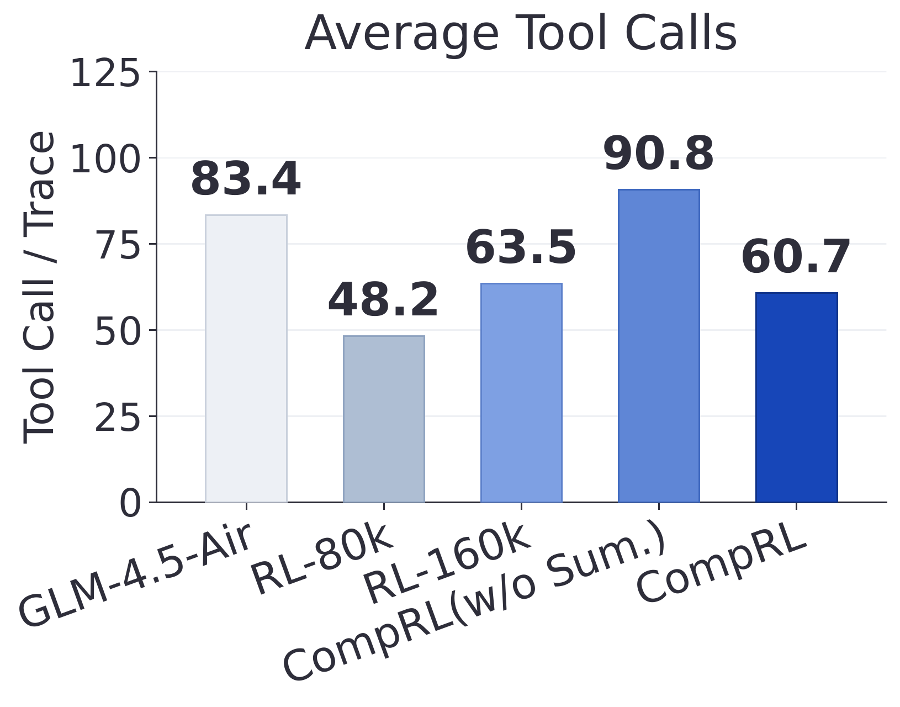
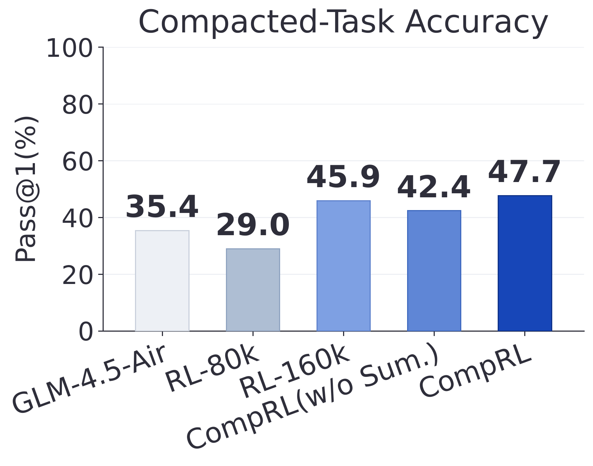
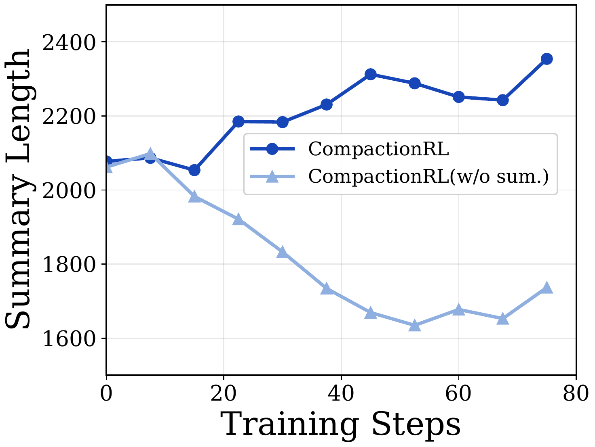
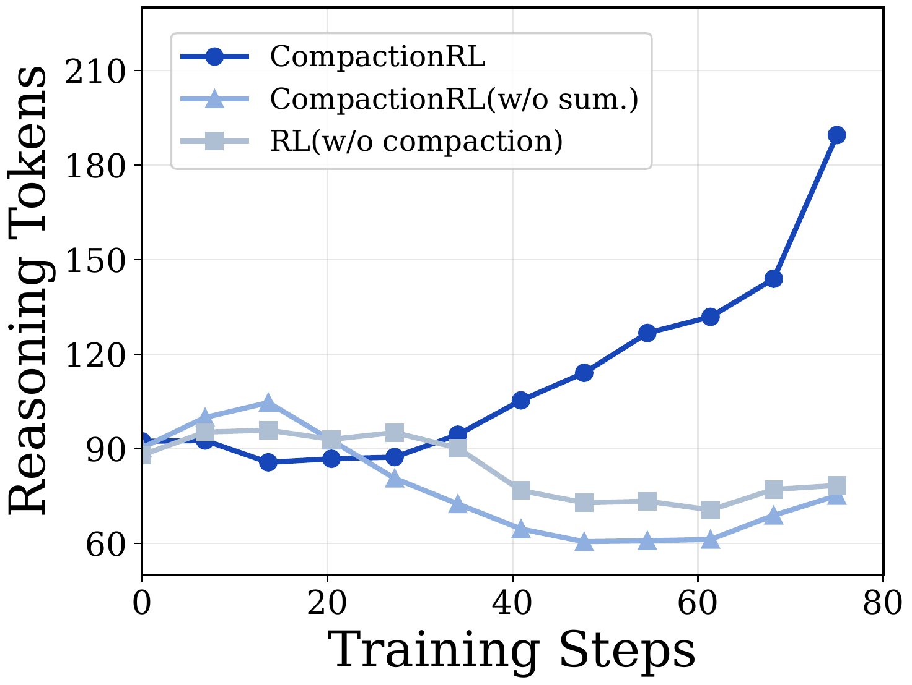
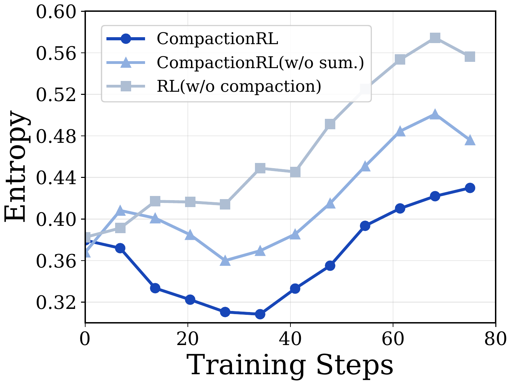

压缩不是省 token，而是把摘要纳入信用分配
CompactionRL 把长程智能体的上下文压缩从推理期技巧改造成 RL 训练对象：摘要 token 与执行 token 共用任务奖励，再用 token-level loss 和跨分段 GAE 修正压缩带来的训练偏差。
长程 agent 的难点不只是“上下文放不下”，而是 一旦历史被摘要替换，后续所有动作都被迫相信这份摘要。如果 RL 只奖励最后任务成功，却没有训练摘要本身，压缩就会成为训练管线外的一段脆弱手工逻辑。
CompactionRL 的判断是：摘要不是日志归档，而是一类会影响最终 reward 的 policy action。于是摘要 token 和执行 token 被放进同一个 PPO 训练问题里，论文再处理两个随之出现的偏差：分段数量/长度造成的 loss 权重偏差，以及 terminal reward 被错误拉近的信用分配偏差。
阅读对象：一篇把 compaction 训练化的长程 agent RL 论文
论文声称，CompactionRL 在固定峰值上下文预算下，让开源 GLM 系列模型在 coding-agent 任务的 compacted inference 中获得一致增益。这里要谨慎读：它不是证明“压缩永远优于长上下文”，而是在同一 agent scaffold 和同一 compacted setting 下展示训练摘要与执行的收益。
CompactionRL 把一次长 rollout 改写成“执行段 + 摘要段”的训练对象
论文的设置很具体：agent 在软件工程、终端任务这类长程交互中不断产生 assistant response 和 environment observation。历史越长，越容易逼近固定 context budget。CompactionRL 不把 summary 当作外部工具，而是在 rollout collection 时由当前 policy 生成 summary，再从 summary 和最近若干轮交互恢复上下文。
- 原始历史按 assistant-observation 原子步组织。论文把 \(z_i=(a_i,o_i)\) 当作不可拆分单元，避免 compaction 把工具调用和工具反馈切开。
- 预算不足时触发 summary。当剩余 context budget 小于 \(T_{\mathrm{comp}}\) 时，policy 在当前历史后追加固定总结指令并采样 summary。
- 恢复上下文保留两类信息。长程信息靠 summary，最近环境状态靠尾部 \(k\) 个原子步。论文默认 \(k=2\)，必要时减少以满足预算。
- 训练时 summary token 与 execution token 都被优化。每条 compacted rollout 拆成若干 segment，但它们共享同一个最终任务 reward，不另造 summary-quality reward。

公式要解决两件事：别让长短 segment 改变权重，别把远处 reward 看近了
CompactionRL 的公式部分可以分成三层。第一层定义何时压缩与如何恢复；第二层把 PPO loss 写到 token 粒度；第三层用跨轨迹位置校正，让早期 segment 的 advantage 不会因为“每段独立训练”而错误地靠近终点奖励。
summary 不是辅助标签
论文没有引入手写 summary quality reward，而是让 summary token 直接受最终任务 reward 影响。
可变 segment 数破坏 group 假设
GRPO 类 group-wise 方法在 segment 数随任务变化时，会遇到重复计权和 segment-level advantage 的问题。
GAE 仍是近似
论文限制部分承认 cross-trajectory GAE 不是精确 full-trajectory credit assignment。
实验支持的是“compacted setting 下更可靠”，不是“所有 setting 全赢”
论文实验集中在两个 coding-oriented agent benchmark：SWE-bench Verified 与 Terminal-Bench 2.0。作者使用 Harbor 环境和 Terminus-KIRA agent scaffold，SWE-bench Verified 的作者实验是随机 200 个任务子集，Terminal-Bench 2.0 用完整集合；每个实验报告 2 次 evaluation 的均值。
summary agent 本身会改变任务成功率
| Execution Agent | Summary Agent | SWE-Verified Acc. | Summary Count / Trace |
|---|---|---|---|
| GLM-4.7-Flash | Qwen3.5-27B | 55.5 | 1.010 |
| GLM-4.7-Flash | GLM-4.7-Flash | 50.5 | 1.075 |
| GLM-4.7-Flash | Qwen3-30B-A3B | 49.0 | 1.126 |
来源：论文 Table 1。实验只固定 executor、替换 summary agent，就出现 49.0 到 55.5 的差距。这个结果支撑“summary 是任务性能关键变量”，但不能单独说明哪种 summary 内容最优。
主结果：同一 scaffold 下，CompactionRL 在 compacted evaluation 最强
| Model | Peak Len. | SWE Single ×1 | SWE Compacted ×4 | Terminal Single ×1 | Terminal Compacted ×4 |
|---|---|---|---|---|---|
| GLM-4.7-Flash (30B-A3B) | 64k | 47.5 | 50.5 | 14.6 | 13.4 |
| + RL w/o compaction | 64k | 50.0 | 48.0 | 16.9 | 12.4 |
| + CompactionRL | 64k | 43.7 | 56.0 | 16.9 | 20.2 |
| GLM-4.5-Air (106B-A30B) | 80k | 57.8 | 59.8 | 17.9 | 21.4 |
| + RL w/o compaction | 80k | 58.3 | 62.5 | 20.2 | 23.6 |
| + CompactionRL | 80k | 57.3 | 66.8 | 21.4 | 24.5 |
来源：论文 Table 2，表中只抽取 Terminus-KIRA scaffold 的同系模型行。模式很清楚：CompactionRL 在 compacted ×4 列稳定领先；single ×1 列并非稳定提升，30B 的 SWE single 还下降到 43.7。
两个训练修正确实被 ablation 支持
| System | SWE-bench Verified | Terminal-Bench 2.0 | 读法 |
|---|---|---|---|
| GLM-4.5-Air | 59.8 | 21.4 | 80k×4 compacted baseline |
| + CompactionRL | 66.8 | 24.5 | 完整方法最好 |
| − w/o token-level loss | 60.0 | 21.3 | 去掉 token 归一化后几乎回到 baseline |
| − w/o cross-trajectory GAE | 63.0 | 22.5 | 仍有收益，但明显低于完整方法 |
来源：论文 Table 4。作者解释为两项都重要，其中 token-level loss normalization 的移除造成更大下降。这个表是 GLM-4.5-Air-SFT 上的 ablation，不能自动外推到所有模型规模和任务域。
行为图说明：收益不像是单纯“多跑几步”，而是摘要训练让继续执行更稳
论文 Figure 3 观察 GLM-4.5-Air 在 80k×4 compacted evaluation 下的行为。CompactionRL 的 compaction 次数和 tool call 数不是最多，compacted-task accuracy 却最高。作者据此认为，提升不是因为它简单拉长 trace，而是 trained summaries 减少了压缩后重新探索和状态丢失。



Figure 4 则看训练动态：当 summary response 进入 RL objective，summary length 随训练变长，reasoning tokens per turn 增加，entropy 上升更慢。论文的解释是，模型学会保存更多可继续执行的状态，而不是只写概括性进度。



真正的边界：它训练的是 compaction-enabled agent，不是通用 single-window 增强器
论文自己的 limitations 很直接：CompactionRL 针对启用 compaction 的执行方式训练，关闭 compaction 后 gains 不稳定。这不是小脚注，而是决定部署方式的前提。若生产环境不允许 test-time compaction，这套方法可能不会自然迁移。
CompactionRL 在论文设置的 compacted evaluation 下提高 SWE-bench Verified 与 Terminal-Bench 2.0 Pass@1；summary agent 的选择会影响任务成功；去掉 token-level loss 或 cross-trajectory GAE 会降低 GLM-4.5-Air-SFT 的 80k×4 结果。
这篇论文的长期价值可能在“重定义长程 RL 样本结构”，而不只是上下文压缩技巧。这个判断来自方法章节和 ablation 的组合，不是论文直接宣称的定理。
跨分段 GAE 只是近似；coding-oriented benchmark 之外的任务域未覆盖；更长 summary 与更好任务成功之间没有被拆成因果机制；公共模型 baseline 因 scaffold 差异不能直接横向排位。
读者可以接着比较 ReSum、SUPO、Context-Folding 一类 context management RL 工作，重点看 summary 是外部工具、训练动作，还是 branch-and-fold 技能；再看各自如何处理 reward attribution。